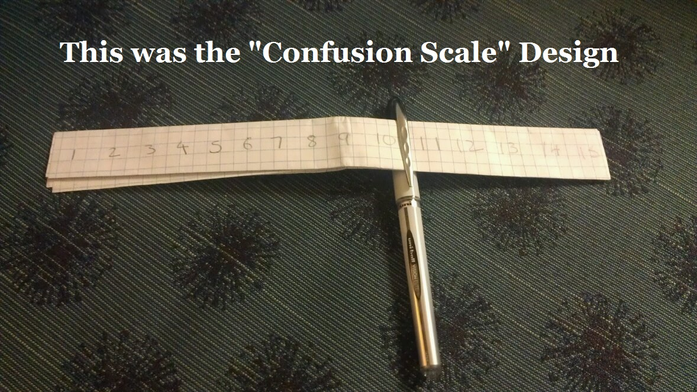
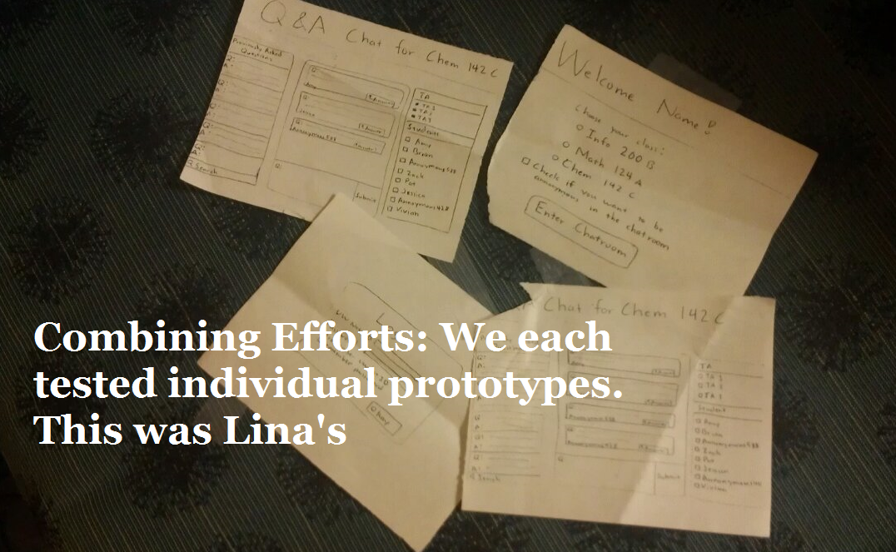

The Design

My Initial Design
The solution that I designed was the Confusion Meter. The initial rough prototype was a peice of paper labeled one to fifteen, with a pen attached to slide around the confusion bar. Ideally, the confusion meter collects data of all students and is updated in real time so that the professor would be able to see how the class was doing throughout the lecture. This addresses the issue because the question scale is anonymous and nobody else in the class would know that a certain person is confused. It would ideally make the student more comfortable during lecture to say that they are confused.

Combining Efforts
Our team decided to create a prototype that combined each of the solutions we came up with into one application that contained a chat room, a question box in which users can ask questions, and the Confusion Scale. At this point, we decided to add many other features: a search bar, an archive of previously asked questions, and a section in which the student could ask the TA questions independently. This was our initial design.
Cutting Back
Our first design was messy. We got too excited and introduced too many functions onto one page. So we came up with another idea: filters. What if we could filter questions by the date, rating, and teacher endorsed? This was how we eliminated some of the clutter. We decided to create a tab at the top of the page as well that would lead to an archive page; the archive page would be able to filter by the same things. At this point, we deleted the chatroom because we figured the professor might not want a chatroom to be happening during lecture.
Towards the end, we even cut back and deleted the Confusion Scale from the layout because this feature did not directly address the Problem Statement.
Naming our Product
We never came up with a solid name for our product. At some points, it was referred to as "The Question Program", "MQuestion" (because we were Team M), "ICQM" or "In class Question Manager". Eventually, as we were wrapping up the project, we decided to call it "The Question Master". And somehow, that one stuck around.